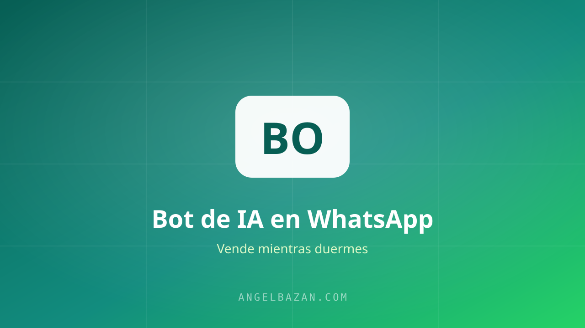

Cómo automatizar WhatsApp con IA: el bot que vende mientras duermes
Respuesta al instante, calificación de leads, agenda de citas y cierre de ventas: así configuro un asistente de IA en WhatsApp que trabaja 24/7.
En este artículo
Un lead que espera 3 horas por una respuesta compra con la competencia. Un lead que recibe respuesta en 30 segundos ya está a medio camino de la venta. Automatizar el WhatsApp con IA no es opcional cuando tu embudo crece: es lo que separa el negocio que escala del que se ahoga en chats.

Por qué automatizar: la velocidad que vende
El WhatsApp premia la velocidad. El 78% de los clientes compra con la empresa que responde primero. Un bot de IA responde en segundos, a cualquier hora, todos los días. Es el único "vendedor" que nunca duerme y nunca se toma vacaciones.
Qué puede hacer un bot de IA hoy
- Responder al instante: preguntas de precio, envío, garantía, disponibilidad.
- Calificar leads: presupuesto, urgencia e intención con 2-3 preguntas.
- Presentar la oferta: con su enlace de pago y sus beneficios, cuando el lead califica.
- Agendar citas: conectado a tu calendario, sin ir y venir de fechas.
- Hacer seguimiento: recontactar a quien no respondió con la secuencia correcta.
- Vender productos digitales: entrega automática después del pago, con order bump incluido.
Cómo funciona por dentro
La arquitectura es más simple de lo que parece: el WhatsApp se conecta a una plataforma (ManyChat o la API de WhatsApp Business), la conversación pasa a un modelo de IA con una base de conocimiento cerrada (tu oferta, precios, políticas, FAQ) y las respuestas se envían de vuelta al chat. Cuando el bot no sabe, deriva a un humano.
Las reglas que evitan desastres
Aquí es donde se gana o se pierde la confianza:
- Base cerrada: el bot solo responde con la información que le diste; fuera de ella, deriva. Nunca dejes que invente precios o promesas (cómo evitar que la IA invente).
- Tonos definidos: instruye el estilo: cercano, directo, sin vendedor agresivo.
- Límites claros: máx. 2-3 mensajes sin respuesta antes de parar; nadie quiere spam.
- Pruebas mensuales: pregunta trampa incluida: "¿me das un descuento del 90%?".
Montaje paso a paso
- Activa una cuenta de WhatsApp Business y configura tu perfil con oferta y horario.
- Conecta la cuenta a una plataforma de automatización (ManyChat es la más fácil para empezar).
- Escribe la base de conocimiento: precios, FAQ, objeciones y el guion de tu oferta.
- Configura el flujo de bienvenida + calificación + presentación de oferta.
- Conecta el disparador de Meta Ads: clic al anuncio = inicio de conversación.
- Mide: costo por conversación, tasa de conversión a venta y objeciones recurrentes.
Cuándo pasa al humano
El bot no cierra todo: las ventas de ticket alto, los clientes molestos y los casos complejos deben saltar a un humano. La regla: el bot responde el 80% repetitivo; el humano se concentra en el 20% que paga. Así el costo por venta baja y la experiencia sube.
Ejemplo real: un día con un bot de IA en WhatsApp
Una clínica dental con la que trabajé recibía 25-30 mensajes diarios por los anuncios de Meta Ads, y la recepcionista no daba abasto entre citas y pacientes en sala. Montamos un asistente de IA con la base de conocimiento de la clínica: precios, promociones, horarios y el proceso para agendar.
El resultado en una semana típica: el bot respondió en segundos el 82% de las consultas, calificó a los interesados con dos preguntas (qué tratamiento buscas y para qué fecha) y agendó 14 citas directo en el calendario. Solo 5 conversaciones saltaron al humano: urgencias y preguntas muy específicas de seguros. El costo por mensaje bajó, la tasa de respuesta subió y la recepcionista pasó de apagar incendios a confirmar citas calientes.
Ese es el modelo que funciona: el bot absorbe lo repetitivo, el humano se queda con lo que paga. Para montarlo sin programar, sigue la guía de cómo crear un bot de WhatsApp sin código y enmárcalo dentro de una estrategia de marketing conversacional.
Preguntas frecuentes
¿El bot suena robótico y el cliente lo nota?
Depende de cómo lo configures. Con tono definido, frases cortas y respuestas con la información exacta de tu oferta, la mayoría de los clientes no lo distingue. La prueba está en la conversación: si responden con naturalidad, el bot está cumpliendo.
¿Qué pasa si el bot no sabe responder?
Debe derivar al humano en el momento y con contexto: "te conecto con un asesor" y el historial pasa al vendedor. Nunca debe inventar la respuesta, porque una promesa falsa destruye la confianza en un mensaje.
¿Qué herramientas necesito para empezar?
Una cuenta de WhatsApp Business, una plataforma de automatización como ManyChat y un modelo de IA. El guion y las respuestas los generas con la herramienta de secuencias de seguimiento.

Angel Bazán
Especialista en funnels, Meta Ads y WhatsApp + IA. Ayudo a negocios a vender más combinando tráfico pagado con conversaciones automatizadas.
Conoce más sobre mí →Aprende a crear y vender productos digitales con Meta Ads, WhatsApp e IA
Clases en vivo, estrategias y recursos para construir tu sistema desde cero. 🚀
Únete gratis al grupo